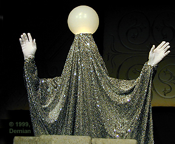
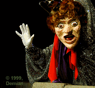
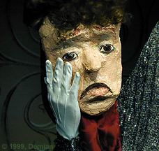
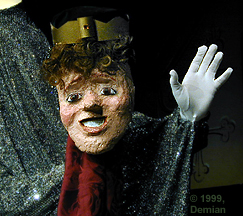
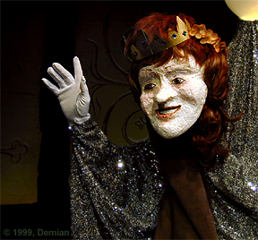
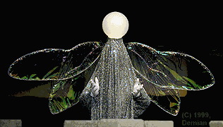

|
Demian created the puppet characters for the opening song in the musical Once Upon a Mattress. He also was puppeteer, operating the Moon character from within. The Moon, in turn, operates the characters of the Prince, the Queen and the Princess.
 Demian inside the Moon figure. The moon provides the other characters with hands and arms
 Queen Aggravain, explains how to recognize a true princess, someone just like she was — when she was younger
  Sad Prince Dauntless becomes overjoyed to find a Princess who passes his mother’s impossible tests
 Princes Winifred swims the castle moat to find a husband
The Moon, lit from inside, enacts the story to the Minstrel’s song — “A Princess is a delicate thing; Delicate and dainty as a dragonfly’s wings.” The Moon (seen below) by enacting the tale, becomes a dragonfly at the song’s end.
 The Moon struts it’s winged stuff
|
All contents © 2003, Demian
|
To Demian’s: Directing Résumé Acting Résumé | Back to: Sweet Corn Productions |
|
Demian Sweet Corn Productions Box 9685, Seattle, WA 98109-0685 206-935-1206 demian@buddybuddy.com www.buddybuddy.com/sweet.html |